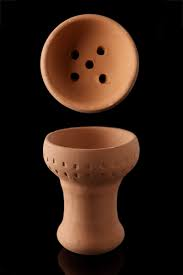
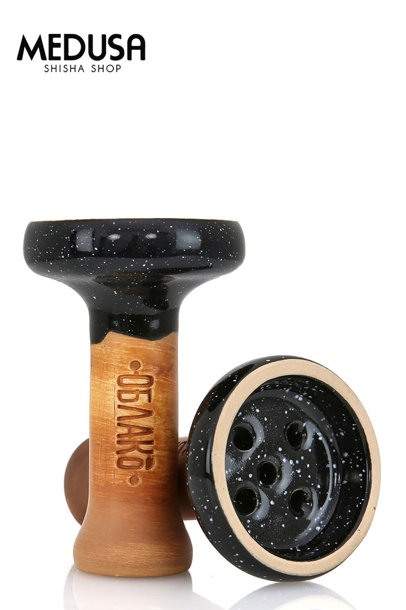

Cazoleta Tradicional
La cazoleta de toda la vida

Cazoleta Vortex
La cazoleta del Provost

Cazoleta Phunel
La cazoleta de los Rusos
La Mejor Cazoleta Del Año 2020
Presentamos las cazoletas más famosas de Rusia. Elegida como mejor cazoleta de Rusia 2018 y muy cotizada entre el público cachimbero. Hablamos de la marca Oblako. El significado de Oblako en ruso es nube, por lo que podemos hacernos una idea del rendimiento que aporta a las fumadas este accesorio.
Estas cazoletas están fabricadas con una mezcla de arcilla y barro blanco bañados con un betún que dan color marrón a estas cazoletas tan famosas. Esta fabricación permite que el carbón caliente uniformemente la cazoleta, aportando una fumada más estable durante más tiempo.